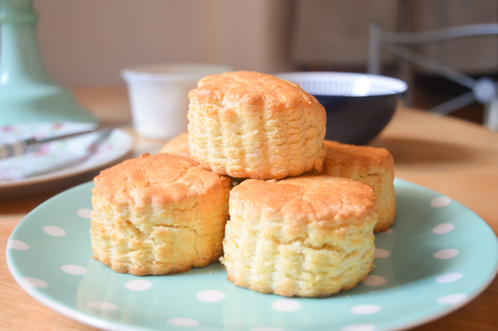

Scones!!
Home

Scones Recipe
This easy scone recipe is perfect for a quick guest snack!
- Put oven settings to fan bake and put the oven on its hottest temperature.
- Grease an oven tray. In a large bowl, sift the flour and optional sugar.
- In a microwave safe bowl, melt butter and allow to cool. Add milk to butter once cooled.
- Gradually add the wet ingredients to the dry until it is nice and moist.
- Tip out onto a floured bench and form into a 'round'. Carefully lift and place onto baking tray (a dough scraper helps) and cut into wedges (leave with sides touching - scones will pull apart after baking). Alternatively, use a cookie cutter or knife to cut into rounds or squares.
- Turn oven down to 200°C still on fan bake.
- Bake for around 15 minutes or until golden and test by sticking a knife in the centre of the scone. This should come out clean if cooked.
Other Recipes
Cookies
Chocolate Cake